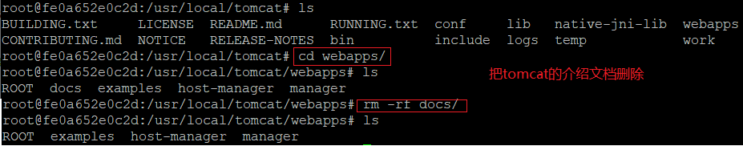
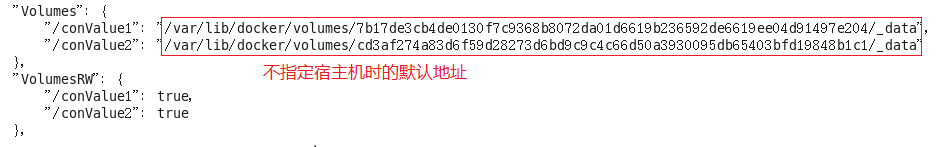

Docker笔记
1.CentOS6.5安装Docker
步骤
安装epel库：yum install -y epel-release
安装Docker：yum install -y docker-io
安装时报错：No package docker-io available
解决办法：
1yum install https://get.docker.com/rpm/1.7.1/centos-6/RPMS/x86_64/docker-engine-1.7.1-1.el6.x86_64.rpm
执行docker version查看版本
配置文件路径： /etc/sysconfig/docker
启动docker： service docker start/stop/restart
2.配置阿里云镜像加速器
1. 阿里云镜像地址
2. 点击镜像加速器： https://3he6t1p2.mirror.aliyuncs.com(专属加速器地址)
xxxxxxxxxx81sudo mkdir -p /etc/docker2sudo tee /etc/docker/daemon.json <<-'EOF'3{4"registry-mirrors": ["https://3he6t1p2.mirror.aliyuncs.com"]5}6EOF7sudo systemctl daemon-reload8sudo systemctl restart docker3. 配置本机Docker运行镜像加速器
打开配置文件： vim /etc/sysconfig/docker， 配置下面这个，后面的网址就是专属镜像加速器地址
xxxxxxxxxx31other_args="--registry-mirror=https://3he6t1p2.mirror.aliyuncs.com"2DOCKER_CERT_PATH=/etc/docker3DOCKER_NOWARN_KERNEL_VERSION=1
4. 保存退出，然后重启docker，检查是否生效
5. 启动Docker后台容器
运行docker run hello-world

CentOS7安装Docker
安装Docker的依赖库。
xxxxxxxxxx11yum install -y yum-utils device-mapper-persistent-data lvm2添加Docker CE的软件源信息。
xxxxxxxxxx11yum-config-manager --add-repo http://mirrors.aliyun.com/docker-ce/linux/centos/docker-ce.repo安装Docker CE。
xxxxxxxxxx21yum makecache fast2yum -y install docker-ce启动Docker服务。
xxxxxxxxxx11systemctl start docker配置阿里云镜像加速器，阿里云镜像地址
xxxxxxxxxx51tee /etc/docker/daemon.json <<-'EOF'2{3"registry-mirrors": ["https://kqh8****.mirror.aliyuncs.com"]4}5EOF重新加载服务配置文件。
xxxxxxxxxx11systemctl daemon-reload重启Docker服务。
xxxxxxxxxx11systemctl restart docker
2. Docker常用命令
帮助命令
- docker version：查看版本
- docker info：比version更详细的信息
- docker --help：类似linux的man命令，查看各种命令的解释
- docker system df:查看镜像，容器，挂载目录，缓存的大小。
- docker system prune:清理镜像，容器，挂载目录，缓存的大小。
镜像命令
docker images：查看本地仓库中的镜像

- REPOSITORY: 镜像的仓库源
- TAG: 镜像版本标签，这个就是ubuntu:latest，可以指定，如果不指定就是:latest
- IMAGE ID: 镜像ID
- CREATED: 镜像创建时间
- VIRTUAL SIZE: 镜像大小
选项：
- -a：all的意思，显示所有镜像，包括中间镜像
- -q：显示当前所有镜像id(不包括中间镜像)
- -qa：显示所有镜像id(包括中间镜像)
- --digests：显示镜像的摘要信息
- --no-trunc：显示完整的镜像信息
docker search 某个镜像名称：查找某个镜像，例如 docker search tomcat
选项：
- --no-trunc：显示完整的镜像信息
- -s： 例如：docker search -s 30 tomcat，只显示stars在30以上的镜像
- --automated：只列出automated类型的镜像
docker pull 镜像名称：下载镜像
docker rmi 镜像名称id：删除镜像
- 选项： -f：强制删除
- 删除单个： docker rmi -f 镜像名称
- 删除多个： docker rmi -f 镜像名称1 镜像名称2
- 删除全部： docker rmi -f $(docker images -qa) ###容器命令
下载centos镜像： docker pull centos
新建并启动容器： docker run [option] 镜像id/镜像名
--name：为容器指定一个新名字
-d：后台运行容器，并返回容器id，就是启动守护式容器
-i：以交互模式运行容器，通常与-t一起使用
-t：为容器重新分配一个伪终端，与-i一起使用
-P：随机端口映射
-p：指定端口映射，有四种格式
- ip:hostPort:containerPort
- ip::containerPort
- hostPort:containerPort
- containerPort
列出当前所有正在运行的容器： docker ps
- -a：列出当前所有正在运行的容器 + 历史上运行过的
- -l：显示最近创建的容器
- -n：显示最经创建的n个容器
- -q：静默模式，只显示容器编号
- --no-trunc：不截断输出
退出容器：
- exit:容器停止退出
- ctrl + P + Q:容器不停止退出
启动容器： docker start 容器id/容器名
重启容器： docker restart 容器id
停止容器： docker stop 容器id
强制停止： docker kill 容器id
删除已经停止的容器：docker rm 容器id
一次删除多个容器：
- docker rm -f $(docker ps -qa): rm是删除，-f是强制，-qa是显示所有的容器id
- docker ps -qa | xargs docker rm：先把 所有容器id查出来，然后通过管道输入符传给后面的然后删掉
重点：
启动守护式容器： docker run -d 容器id
查看容器日志： docker logs -f -t --tail 容器id
- -f： 动态更新最新日志信息
- -t： 加入时间戳
- --tail n：显示最后n条
查看容器内运行的进程： docker top 容器id
查看容器内部细节(以json字符串的形式)： docker inspect 容器id
进入正在运行的 容器并以命令行交互：
- docker exec -it 容器id linux命令：在容器中打开新的终端，并启动新的进程，就直接执行命令了

- docker attach 容器id：直接进入容器启动的命令终端，不启动新的进程
从容器内拷贝文件到主机上： docker cp 容器id：容器内路径 主机路径
3. Docker镜像
commit操作补充
docker commit提交容器副本使之成为一个新的镜像
命令： docker commit -m="提交的描述信息" -a="作者" 容器id 要创建的目标镜像名：[标签名]
案例演示：
从docker hub上下载tomcat并运行：
命令： docker run -it -p 8080:8080 tomcat
- -i： 交互
- -t： 终端
- -p： 主机端口:docker容器端口
- -P： 随机分配端口
如果访问出现404，参考文章
故意删除上一步镜像生产tomcat容器的文档

以这个为模板commit一个新的镜像tomcat2
- 命令： docker commit -m "ksn的tomcat" -a="ksn" fe0a652e0c2d hnguigu/mytomcat:1.0
- -m: 描述信息
- -a： 作者信息
- ：1.0是版本信息
- hnguigu/mytomcat： 命令空间/镜像名
启动新镜像和原来的做对比，新镜像访问文档显示404，原镜像正常显示
4. Docker容器数据卷
作用
- 容器的持久化和容器之间继承 + 共享数据
添加数据卷
用命令添加
- 命令： docker run -it -v /宿主机绝对路径目录:/容器内目录 镜像名
- 查看数据卷是否挂载成功，使用inspect命令如下即绑定成功

- 容器和宿主机之间的数据共享，两边修改文件会直接同步
- 容器停止退出后，主机修改数据是否同步，容器停止后主机做的修改，容器依旧同步
- 命令(带权限)： docker run -it -v /宿主机绝对目录:/容器目录:ro 镜像名(readonly,只读)
用DockerFile添加
根目录下新建myDocker目录并进入
可在DockerFile中使用VOLUME给镜像添加一个或者多个镜像卷：VOLUME ["/conValue1", "/conValue2"]
File构建
xxxxxxxxxx51# volume test2FROM centos3VOLUME ["/conValue1", "/conValue2"]4CMD echo "success"5CMD /bin/bashbuild后生成镜像： docker build -f /mydocker/Dockerfile -t hnguigu/mycentos .
run容器： docker run -it 新建的镜像
主机默认对应地址

数据卷容器
概念： 命名的容器挂载数据卷，其他其他容器通过挂载这个容器实现数据共享，这个被挂载的容器就叫数据卷容器
案例：
- 先启动一个父容器dc01
- dc02/dc03继承dc01：docker run -it --name "dc02" --volumes-from dc01 hnguigu/mycentos
- 回到dc01看到dc02/dc03各自添加的都可以共享了
- 删除dc01，dc02修改后dc03可以访问
- 删除dc02后dc03是否可以访问
- 结论： 容器之间配置信息的传递，数据卷的生命周期一直维持到没有容器使用它为止
5. DockerFile解析
简介
概念： Dockerfile是用来构建Docker镜像的构建文件，时有一系列的命令和参数构成的脚本
构建三步骤：
- 编写Dockerfiler文件
- docker build
- docker run
Dockerfile构建过程解析
1. Docker内容基础知识
- 每条保留字指令都必须为大写字母，且后面至少跟随一个参数
- 指令按照从上往下，顺序执行
- #表示注释
- 每条指令都会创建一个新的镜像层，并对镜像进行提交
2. Docker执行Dockerfile的大致流程
- docker基础镜像运行一个容器
- 执行一条指令并对容器作出修改
- 执行类似docker commit的操作提交一个新的镜像层
- docker在提交基于刚提交的镜像运行一个新容器
- 执行 dockerfile中的下一条指令直到所有指令执行完成
Dockerfile体系结构(保留字指令)
FROM: 基础镜像，当前新镜像是基于哪个镜像的
MAINTAINER: 镜像维护者的姓名和邮箱地址
RUN: 容器构建时需要运行的命令
EXPOSE: 当前容器对外暴露的端口
WORKDIR: 指定在创建容器后，终端默认登陆进来的工作目录
ENV: 用来构建镜像过程中设置 环境变量
ADD: 将宿主机目录下的文件拷贝进镜像且add命令会自动处理url和解压tar包
COPY: 类似add，但是只是拷贝，不会做处理
VOLUME: 容器数据卷，用于数据保存和持久化工作
CMD: 指定一个容器启动时要运行的命令
- 注意： dockerfile中可以有多个CMD命令，但是只有最后一个生效，CMD会被docker run之后的参数替换
ENTRYPOINT: 和CMD作用一样，都是在指定容器启动程序和参数
ONBUILD: 当构建一个被继承的Dockerfile时运行命令，父镜像在被子镜像继承后父镜像的onbuild被触发

案例
Base镜像(scratch)
编写
- Hub默认的centos镜像时什么情况(WORKDIR是/，没有vim，ifconfig等命令)
- 准备编写Dockerfile文件
- mycentos内容DockerFile
构建: docker build -f DockerFile路径 -t 镜像名称:版本号 .
运行: docker run -it 新镜像名字:版本号
列出镜像的变更历史： docker history 镜像名
CMD/ENTRYPOINT镜像案例
- CMD命令是会覆盖的 ，只执行最后一个，带参数的话就会执行参数;ENTRYPOINT是追加，不会覆盖

- CMD方式
- ENTRYPOINT方式
自定义tomcat9
- 创建一个目录，在里面创建c.txt
- 将jdk和tomcat的压缩包拷贝进上一层目录
- 在创建的目录下新建DockerFIle文件
- 构建： docker build -t Dockerfile文件路径
- run，验证： docker run -it -p 7777:8080 镜像名
- 结合前面说的容器卷将测试web服务test发布
6.Docker安装常用软件
安装mysql
拉取：docker pull mysql:5.6
运行：
交互： docker exec -it mysql容器id /bin/bash

安装redis
拉取： docker pull redis
运行：
xxxxxxxxxx51docker run -p 6379:63792-v /zzyyuse/myredis/data:/data3-v /zzyyusG/myredis/conf/reclis.conf:/usr/local/Gtc/redis/redis.conf4-d redis:3.2 redis-server /usr/local/etc/redis/redis.conf5--appendonly yes在/zzyyusG/myredis/conf/reclis.conf这个 目录下新建redis.conf文件，编写配置文件
测试： docker exec -it 运行redis的容器id redis-cli
7.本地镜像发布到阿里云

然后登录进去创建镜像仓库什么的
回到本地准备执行命令
xxxxxxxxxx31$ sudo docker login --username=帅气的小kkk registry.cn-hangzhou.aliyuncs.com2$ sudo docker tag [ImageId] registry.cn-hangzhou.aliyuncs.com/ksnkk/mycentos:[镜像版本号]3$ sudo docker push registry.cn-hangzhou.aliyuncs.com/ksnkk/mycentos:[镜像版本号]###从阿里云下载上传的镜像
docker pull registry.cn-hangzhou.aliyuncs.com/ksnkk/mycentos:1.1.1(这个网址是阿里云上搜索仓库搜到的公网地址)

然后运行即可
Docker-compose
Docker-compose官方文档
1. 安装componse
61安装到/usr/local/bin/docker-compose目录下，地址不能变2curl -L https://github.com/docker/compose/releases/download/1.22.0-rc1/docker-compose-`uname -s`-`uname -m` -o /usr/local/bin/docker-compose34chmod +x /usr/local/bin/docker-compose56查看版本： docker-compose -version2. 卸载
11rm /usr/local/docker-compose/docker-compose3.常用命令
可以使用docker-compose -h 查看

命令模板：docker-compose [-f <arg>...] [options] [COMMAND] [ARGS...]
命令选项：
- -f ：-file，指定要使用的docker-compose文件，默认是docker-compose.yml(后缀可以是yaml)
- -p: -project-name，指定项目名称，默认将所在目录作为项目名
- -x-network-driver： 使用docker的可插拔网络后端特性(需要docker1.9后)，有三种，bridge(默认)，host，overlay
- -verbose： 输出更多调试信息
- -v ： 查看版本号
常用命令列表：
up： 自动完成包括构建镜像，创建服务，启动服务并关闭关联容器的一系列操作
格式：
docker-compose up [options] [--scale SERVICE=NUM...] [SERVICE...]选项：
- -d： 在后台运行服务容器
- –no-color： 不使用颜色来区分不同的服务的控制输出
- –no-deps ：不启动服务所链接的容器
- –force-recreate： 强制重新创建容器，不能与–no-recreate同时使用
- –no-recreate： 如果容器已经存在，则不重新创建，不能与–force-recreate同时使用
- –no-build： 不自动构建缺失的服务镜像
- –build ：在启动容器前构建服务镜像
- –abort-on-container-exit： 停止所有容器，如果任何一个容器被停止，不能与-d同时使用
- -t： --timeout TIMEOUT 停止容器时候的超时（默认为10秒）
- –remove-orphans： 删除服务中没有在compose文件中定义的容器
- –scale SERVICE=NUM： 服务名=启动个数。设置服务运行容器的个数，将覆盖在compose中通过scale指定的参数
build：构建项目中的服务容器
格式：
docker-compose build [options] [--build-arg key=val...] [SERVICE...]选项：
- –compress：通过gzip压缩构建上下环境
- –force-rm: 删除构建过程中的临时容器
- -no-cache：构建过程中不使用缓存
- -pull：始终通过拉取操作来获取更新的镜像
- -m：– –memory为构建的容器设置内存大小
- -build-arg：设置build-time变量
logs： 查看日志输出
格式：
docker-compose logs [options] [SERVICE...]x
1`docker-compose logs -f 容器名选项：
- -no-color： 关闭颜色
- -f： 类似tail -500f a.txt中的f
ps： 列出项目中所有容器
格式：
docker-compose ps [options]11docker-compose ps -q -q表示只显示id
start： 启动已经存在的容器
xxxxxxxxxx11docker-compose start [SERVICE...]stop： 停止容器
xxxxxxxxxx11docker-compose stop [SERVICE...]restart： 重启容器
格式：
docker-compose restart [options] [SERVICE...]xxxxxxxxxx11docker-compose restart -t 10 容器id -t是超时时间（默认10s）
rm： 删除所有停止状态的容器
格式：
docker-compose rm [options] [SERVICE...]选项：
- -f： – –force，强制直接删除
- -v：删除容器所挂载的数据卷
down： 停止并删除容器，网络，镜像和数据卷
格式：
docker-compose down [options]选项：
-rmi type： type为all或者local。all：删除compose中定义的所有镜像，local：删除镜像名为空的镜像。
x
1docker-compose down -rmi all or docker-compose down-v： 删除已经在compose中定义的和匿名的附着在容器上的数据卷
-remove-orphans：删除服务中没有在compose中定义的容器
kill： 通过发送SIGKILL命令强制停止服务容器
格式：
docker-compose kill [options] [SERVICE...]选项：
-s：通过-s来指定发送信号，如：
xxxxxxxxxx21docker-compose kill -s SIGINT2docker-compose kill -s SIGKILL
top：显示运行的进程
xxxxxxxxxx11docker-compose stop [options] [SERVICE...]config： 验证和查看docker-compose文件配置
- 格式：
docker-compose config [options]
create： 为服务创建容器，只是单纯的创建还需要使用start启动
格式：
docker-compose create [options] [SERVICE...]选项：
- –force-recreate： 重新创建容器，即使它的配置和镜像没有改变，不兼容–no-recreate参数
- –no-recreate：如果容器已经存在，不需要重新创建. 不兼容–force-recreate参数
- -no-build：不创建镜像，即使缺失
- -build：创建容器前生成镜像
exec： 在运行的容器中执行命令，相当于docker的exec
格式：
docker exec [options] SERVICE COMMAND [ARGS...]xxxxxxxxxx11docker-compose exec web1 /bin/bash选项：
- -d: 分离模式，后台运行命令
run： 在指定服务上执行一个命令
格式：
docker-compose run [options] [-v VOLUME...] [-p PORT...] [-e KEY=VAL...] SERVICE [COMMAND] [ARGS...]选项：
-d：在后台运行服务容器
–name NAME： 为容器指定一个名字
–entrypoint CMD： 覆盖默认的容器启动指令
-e KEY=VAL： 设置环境变量值，可多次使用选项来设置多个环境变量
-u, --user=""： 指定运行容器的用户名或者uid
–no-deps： 不自动启动管理的服务容器
–rm ：运行命令后自动删除容器，d模式下将忽略
-p： --publish=[] 映射容器端口到本地主机
–service-ports： 配置服务端口并映射到本地主机
-v：--volume=[] 绑定一个数据卷，默认为空
-T：不分配伪tty，意味着依赖tty的指令将无法运行
-w：--workdir="" 为容器指定默认工作目录
x
1docker-compose run --no-deps web
pause： 暂停一个容器
11docker-compose pause 容器id unpause：恢复暂停的容器
xxxxxxxxxx11docker-compose unpause 容器idpull： 拉取服务所需的镜像
格式：
docker-compose pull [options] [SERVICE...]选项：
- –ignore-pull-failures： 忽略拉取镜像过程中的错误
- –parallel： 多个镜像同时拉取
- –quiet： 拉取镜像过程中不打印进度信息
push： 推送服务镜像
格式：
docker-compose push [options] [SERVICE...]选项：
- –ignore-push-failures： 忽略推送镜像过程中的错误
port： 打印某个容器端口所映射的公共端口
格式：
docker-compose port [options] SERVICE PRIVATE_PORT选项：
- –protocol=proto： 指定端口协议，TCP（默认值）或者UDP
- –index=index： 如果同意服务存在多个容器，指定命令对象容器的序号（默认为1）
scale： 设置指定服务运行的容器个数
格式：
docker-compose scale [options] [SERVICE=NUM...]xxxxxxxxxx11docker-compose scale -t 10 web=3 db=2- -t ：超时时间，默认10s，web=3启动三个容器运行web服务，启动两个容器运行db服务
help： 获得一个命令帮助
4.Compose模板文件
例子：
x
1version'3'2services3 nacos4 imagenacos/nacos-server2.0.15 hostname"nacos-standalone"6 environment7MODE=standalone8TZ=Asia/Shanghai9 volumes10/docker/nacos/standalone-logs/:/home/nacos/logs11/docker/nacos/init.d/custom.properties:/home/nacos/init.d/custom.properties12 ports138848:8848149848:9848159849:984916 networks17 blade_net18 ipv4_address192.168.1.16819networks20 blade_net21 driverbridge22 ipam23 config24subnet172.30.0.0/16常用模板文件语法
build: 指定dockerFile文件的路径，加载dockerFile文件，用这个来构建镜像
x
1build: /usr/local/build/dircommand：覆盖容器启动后执行的默认命令
xxxxxxxxxx11command: echo "hello world"
container_name：指定容器名称，默认是 “项目名称服务名称序号” 的格式
xxxxxxxxxx11container_name: docker-web-container
dns： 自定义DNS服务器，可以是一个值也可以是列表
41dns：8.8.8.82dns：38.8.8.849.9.9.9dockerfile：指定额外的编译镜像的DockerFile文件，不能和images同时使用
xxxxxxxxxx11dockerfile: Dockerfile-alternate
env_file：从文件中获取环境变量如果有变量名和environment指定冲突，以后者为准
x1env_file: ./common.env23env_file:4- ./common.env5- ./apps/web.env6- /opt/secrets.env
environment：设置环境变量
xxxxxxxxxx11environment: or environment:2RACK_ENV: development - RACK_ENV=development3SESSION_SECRET: - SESSION_SECRET
expose： 暴露端口但是不映射到宿主机，只允许能被连接的服务访问。仅可以指定内部端口为参数
xxxxxxxxxx11expose:2- "3000"3- "8000"
extends：基于其他模板文件进行扩展，例如：
61# common.yml，已有这个基本的模板文件，在其他的模板文件中引用这个2webapp3 build./webapp4 environment5DEBUG=false6SEND_EMAILS=false111# development.yml，引用common.yml模板文件2web3 extends4 filecommon.yml5 servicewebapp6 ports7"8000:8000"8 links9db10 environment11DEBUG=trueimage：指定镜像名或id，如果本地不存在则会去拉取
x1image: nginx
net： 设置网络模式，类似于docker client的–net参数
xxxxxxxxxx11net: "bridge"2net: "none"3net: "host"
ports：暴露端口信息，格式：（HOST:CONTAINER）
xxxxxxxxxx11ports：2- “3000”3- “8000:8000”4- "8080:22"
volumes： 数据卷所在路径
x1volumes:2- /var/lib/mysql3- cache/:/tmp/cache
volumes_from： 从另一个容器挂载数据卷
xxxxxxxxxx11volumes_from:2- service_name3- container_name
读取环境变量，从系统环境变量中读取MONGO_VERSION
x1db:2image: "mongo:${MONGO_VERSION}"
不常用模板文件语法
external_links：链接到docker-compose.yml外部的容器，甚至可以是非Compose管理的外部容器。参数格式跟links类似
xxxxxxxxxx11external_links:2- redis_13- project_db_1:mysql4- project_db_1:postgresql
links：链接到其他服务中的容器。使用服务名称（同时作为别名），或者“服务名称:服务别名”（如 SERVICE:ALIAS）
xxxxxxxxxx1links2db3db:database4redis5使用别名将会自动在服务容器中的/etc/hosts里创建6172.17.2.186 db7172.17.2.186 database8172.17.2.187 redislog_driver：类似于Docker中的–log-driver参数，指定日志驱动类型。目前支持三种日志驱动类型
xxxxxxxxxx11log_driver: "json-file"2log_driver: "syslog"3log_driver: "none"
log_opt：日志驱动的相关参数
xxxxxxxxxx11log_driver: "syslog"2log_opt:3syslog-address: "tcp://192.168.0.42:123"
pid：跟主机系统共享进程命名空间。打开该选项的容器之间，以及容器和宿主机系统之间可以通过进程ID来相互访问和操作
xxxxxxxxxx11pid: "host"
security_opt：指定容器模板标签（label）机制的默认属性（用户、角色、类型、级别等）。例如，配置标签的用户名和角色名
xxxxxxxxxx11security_opt:2- label:user:USER3- label:role:ROLE
ulimits：指定容器的ulimits值限制值。例如，指定最大进程数为65535，指定文件句柄数为2000（软限制，应用可以随时修改，不能超过硬限制）和 4000（系统硬限制，只能root用户提高）
xxxxxxxxxx51ulimits:2nproc: 655353nofile:4soft: 200005hard: 40000
extra_hosts：类似于Docker中的–add-host参数，指定额外的host名称映射信息
xxxxxxxxxx11extra_hosts:2- “googledns:8.8.8.8”3- "dockerhub:52.1.157.61"4会在启动后的服务容器中/etc/hosts文件中添加如下两条条目68.8.8.8 googledns752.1.157.61 dockerhub
labels: 为容器添加元数据信息，添加辅助说明等
xxxxxxxxxx21labels：2com.startupteam.description: "webapp for a strtup team"
5.Compose实战
新建docker-compose.yml文件，文件内容如下：
x
1version'2'2services3 web14 imagenginx5 ports6"8880:80"7 container_name"web1"8 web29 imagenginx10 ports11"8890:80"12 container_name"web2"13#volumes:14#networks:使用docker-compose up运行容器


修改docker-compose.yml
x
1version'2'2services3 web14 imagenginx5 ports6"8080:80"7 container_name"web1"8 networks9dev10 volumes11ntfs:/data12 web213 image:nginx14 ports15"8081:80"16 container_name"web2"17 networks18dev19pro20 volumes21./web2:/usr/share/nginx/html22 web323 imagenginx24 ports25"8082:80"26 container_name"web3"27 networks28pro29 volumes30./web3:/usr/share/nginx/html31networks32 dev33 driverbridge34 pro35 driverbridge36volumes37 ntfs38 driver./web1